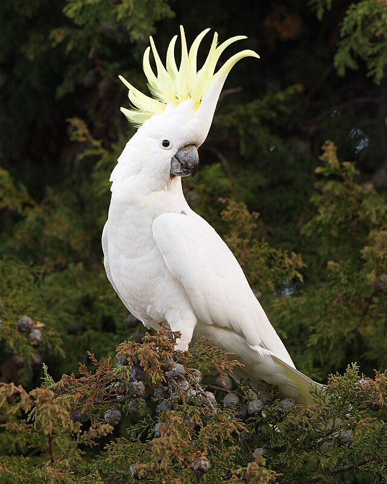
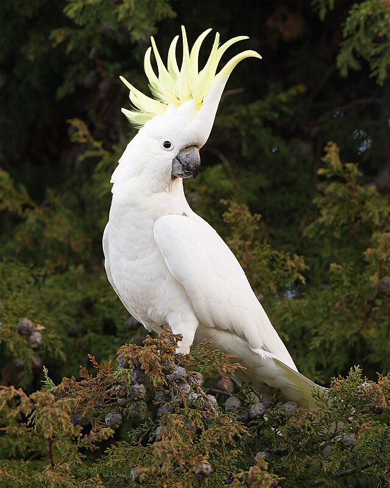

1. Guacamayos
Los guacamayos son conocidos por su tamaño impresionante y sus colores brillantes. Son uno de los loros más grandes del mundo, con una envergadura de hasta 1.5 metros.
- Distribución: Selvas tropicales de América Central y América del Sur.
- Especies notables: Guacamayo azul y amarillo, guacamayo escarlata.
2. Cacatúas
Las cacatúas tienen una característica cresta que levanta para expresar emociones. Se encuentran principalmente en Australia y las islas cercanas.
3. Loros Grises Africanos
Famosos por su alta inteligencia y capacidad para hablar, los loros grises africanos son ideales para la investigación sobre el comportamiento animal.
 
